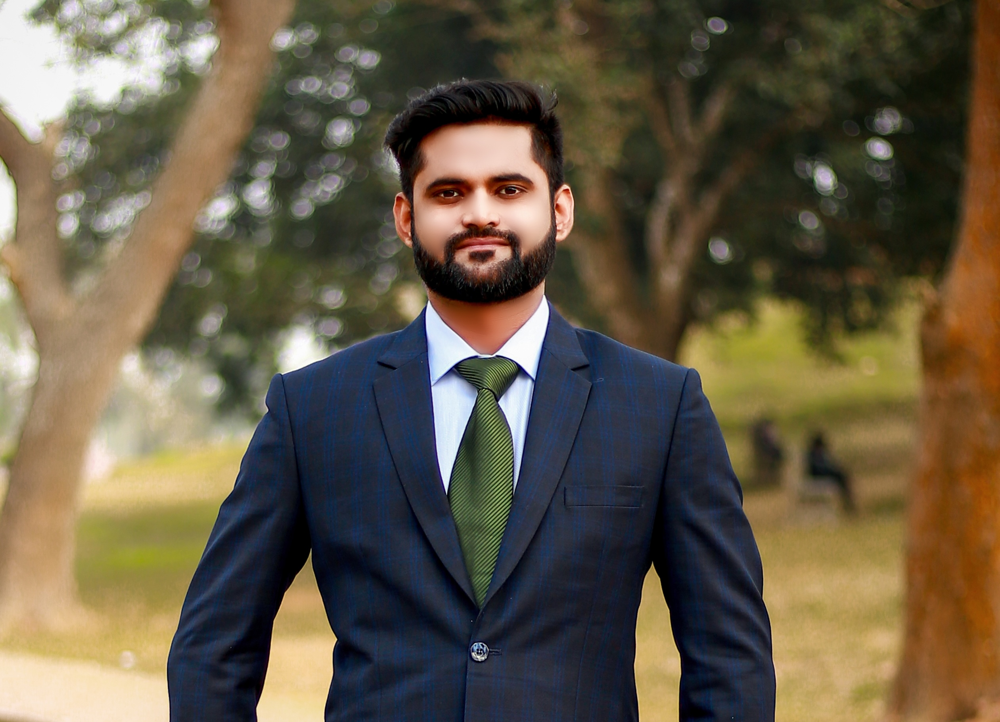

About Me

Hello! I'm a dedicated researcher specializing in deep learning,
autonomous systems, and medical imaging.
My passion lies in pushing the boundaries of unsupervised learning,
model optimization, and GPU acceleration to
develop efficient solutions for both autonomous vehicles and
healthcare applications. I strive to leverage cutting-edge techniques
that enhance real-time scene understanding, medical image processing, and
advanced driver-assistance systems.
Research Projects
Project A: Semantic Scene Understanding in Autonomous Systems
Source of Funding: Departmental funding, University of Arkansas
Brief & Simple Summary:
- Problem: Enabling autonomous systems to interpret complex scenes in real-time, ensuring safe navigation.
- Uniqueness: Unsupervised learning methods that adapt to new environments without extensive labels.
- Real-World Application: Enhances autonomous vehicle navigation in diverse environments.
- Interested Entities: Automotive companies, JPL labs, federal road safety departments.
Technical Summary:
- Data acquisition & preprocessing with diverse environment datasets.
- Algorithm development using Neural Radiance Fields (NeRF) for 3D reconstruction.
- Panoptic segmentation merging instance and semantic segmentation.
- Real-time optimization (model pruning, efficient neural architectures).
Scientific Impact: Advances unsupervised scene understanding for better adaptability in autonomous systems.
Economic Impact: Enhances safety and reduces costs in logistics, transportation, and reduces traffic accidents.
Project B: Denoising MRI Using Deep Unsupervised Methods
Source of Funding: CIDER Lab, University of Arkansas
Related Publication: From Noise Estimation to Restoration: A Unified Diffusion and Bayesian Risk Approach for Unsupervised Denoising
Brief & Simple Summary:
- Problem: Reducing noise in MRI scans, crucial for diagnostic accuracy.
- Uniqueness: Novel unsupervised approach integrating enhanced diffusion and deep CNN (DnCNN), no noiseless ground truth needed.
- Real-World Application: Direct implementation in medical settings to improve MRI clarity.
- Interested Entities: Healthcare providers, medical imaging companies.
Technical Summary:
- Enhanced diffusion models for noise estimation and reversal.
- Bayesian-enhanced loss functions (SURE, PURE, Bayesian-PGURE).
- Dynamic training of DnCNNs, adapting to various noise levels.
Scientific Impact: Introduces adaptable unsupervised MRI denoising, reducing dependence on clean datasets.
Economic Impact: Fewer diagnostic errors, faster scans, and reduced healthcare costs.
Project C: Learning from Oversampling for MRI Reconstruction
Source of Funding: CIDER Lab, University of Arkansas
Related Publication: Learning from Oversampling: A Systematic Exploitation of Oversampling in Deep Learning-Based MRI Reconstruction
Brief & Simple Summary:
- Problem: Data scarcity in training deep learning MRI reconstruction models.
- Uniqueness: Novel oversampling approach in k-space data, expanding dataset diversity beyond standard augmentation.
- Real-World Application: Improves MRI quality from undersampled data for efficient, accurate diagnoses.
- Interested Entities: Medical institutions, MRI tech developers.
Technical Summary:
- One-to-many mapping function for oversampling training data.
- Dual-network architecture boosting generalization for undersampled MRI data.
- Comprehensive validation with complex MRI datasets.
Scientific Impact: Advances MRI reconstruction under limited data conditions, enhancing reliability and speed.
Economic Impact: Efficient scans reduce healthcare costs, increase patient throughput, and improve clinical outcomes.
Project D: Automatic AI System for Early Detection of Autism Spectrum Disorders in Children
Source of Funding: CVIU lab at University of Arkansas
Brief & Simple Summary:
- Problem: Early ASD detection is crucial for timely intervention and improved developmental outcomes.
- Uniqueness: AI-based behavioral pattern analysis, faster and more objective than traditional methods.
- Real-World Application: Can be integrated into pediatric care for quicker screening and diagnosis.
- Interested Entities: Healthcare providers, pediatric clinics, special education programs.
Technical Summary:
- Machine learning algorithms analyzing video/audio cues of children’s behavior.
- Efficient system for real-time screening, reducing manual overhead.
- Scalable approach for broader population screening.
Scientific Impact: Demonstrates integration of AI in neurodevelopmental diagnostics, broadening pediatric healthcare capabilities.
Economic Impact: Reduced healthcare and educational costs through earlier, targeted interventions.
Project E: Enhancing ADAS with EEG-Based Emotion Recognition for Autonomous Systems
Source of Funding: NEMSYS Lab & Chang'An University, Xi’an, China
Related Publication: A Literature Review on Emotion Recognition using Various Methods
Brief & Simple Summary:
- Problem: Improving ADAS by integrating EEG-based emotion recognition to assess driver states.
- Uniqueness: Goes beyond camera-based or visual modalities by using EEG for direct emotion/cognitive state detection.
- Real-World Application: Enhances autonomous driving safety by adapting to driver stress or distractions.
- Interested Entities: Automotive manufacturers, autonomous vehicle tech firms, regulatory bodies.
Technical Summary:
- EEG data utilization to gauge stress, attentiveness, or fatigue.
- Integration of Transformers/GRNN for accurate classification of emotional states.
- Multimodal system adapting based on data reliability (EEG, visual, audio).
Scientific Impact: Introduces EEG-based emotion recognition into ADAS, broadening the scope of human-aware autonomy.
Economic Impact: Enhanced vehicle safety reduces accidents and associated costs, fueling innovation in automotive AI.